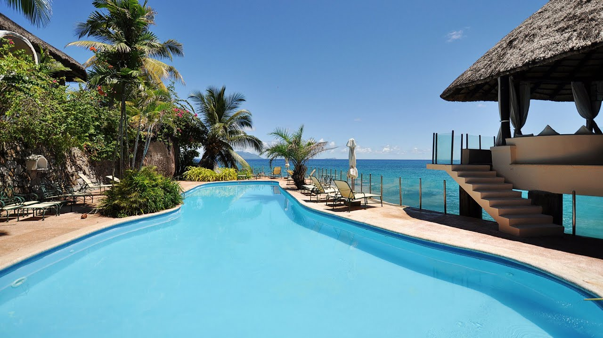
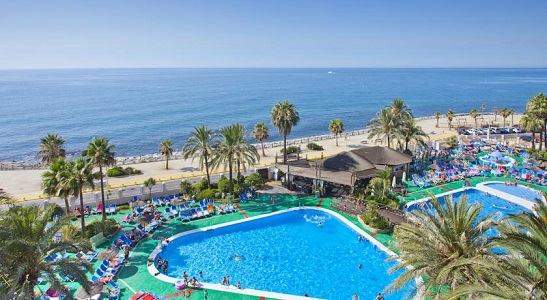

The Seychelles is an archipelago of 115 islands in the Indian Ocean, off East Africa. It's home to numerous beaches, coral reefs and nature reserves, as well as rare animals such as giant Aldabra tortoises. Mahé, a hub for visiting the other islands, is home to capital Victoria. It also has the mountain rainforests of Morne Seychellois National Park and beaches, including Beau Vallon and Anse Takamaka.
Sunset Beach Hotel is situated on the north-west coast of the main Falcon Mahe on a headland affording stunning views of the Ocean, The Sunset Beach Hotel is an intimate Hotel with very high standard of accommodation and service.
The beach is down some steps, and is the perfect coconut palm fringed coral beach and deep azure sea, the water, both the swimming and the snorkelling are superb; Damsel fish, zebra fish and parrot fish are but a few of the many species that you may encounter.

Sunset Beach Hotel, Seychelles
The Sunset Beach Hotel overlooks the Indian Ocean, and is nestled among granite rocks protruding onto a private sandy beach. It features an elevated outdoor pool bordered by tropical palms and free snorkeling equipment.
Guests at the property wake up in rooms with private bathrooms opening out on to patios with views of Beau Vallon Bay and Silhouette Island. Some units are fitted with traditional thatch roofs. Breakfast is served daily at Sunset Beach. Creole and international cuisines are served in the open-air Silhouette Restaurant of the hotel, a great setting for sunset gazing. Refreshments and cocktails can be ordered at the panoramic On The Rocks Bar.
The award-winning Sunset Beach is 4 miles from the center of Victoria. The hotel has free on-site private parking and provides a luxury boat charter service.

Sunset Beach Hotel, Seychelles
©2019 Vacation Spots
Top